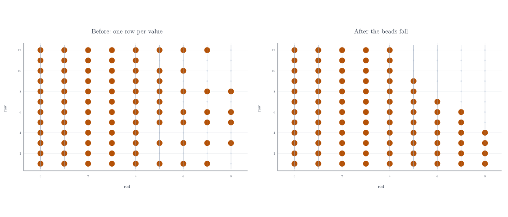
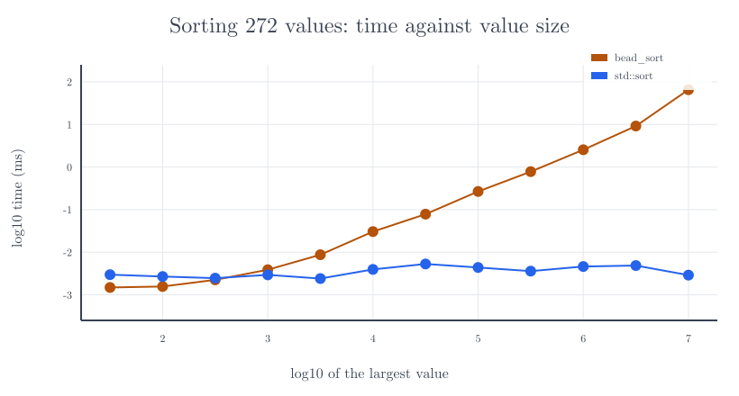

Bead Sort
Abstract
Bead sort lets rows of beads on an abacus fall under gravity, and the rows come
out sorted. We prove why: the fall turns the Ferrers diagram of the values into
its conjugate partition, and reading that diagram's rows conjugates it a second
time, which gives the parts in order. The same argument gives an \(O(n+\max a)\)
algorithm with no bead moves, which is what algorithms::bead_sort implements.
Applied to the 272 waiting times between Old Faithful eruptions, the column
heights of the fallen diagram turn out to be \(n\) times the empirical survival
function, and the rows are the order statistics. A timing study shows the catch:
the cost grows with the largest value, not just with the number of values.
Sorting on an abacus
Bead sort (Arulanandham, Calude and Dinneen 2002) sorts non-negative integers the way an abacus would if it were tipped on its side. Each number \(a_i\) becomes a row of \(a_i\) beads, threaded on vertical rods \(0,1,\dots,a_i-1\). Then the beads are allowed to fall. Every rod's beads slide to the bottom, and the rows, read from the top, now hold the numbers in ascending order. No two numbers are ever compared.
Why it works: conjugate partitions
Rows of left-justified beads are a Ferrers diagram. If the values are read as the parts of an integer partition \(\lambda\), the diagram's column lengths are the conjugate partition
because rod \(j\) carries a bead from every row longer than \(j\). Gravity leaves each rod's count unchanged but stacks its beads at the bottom. So after the fall, the row at height \(r\) (counting the bottom row as \(r=0\)) has a bead on rod \(j\) exactly when \(\lambda'_j>r\), and its length is
where \(a_{(r+1)}\) is the \((r+1)\)-th largest value. The third step holds because at least \(r+1\) values exceed \(j\) exactly when the \((r+1)\)-th largest does. So the bottom row is the largest value, the next row the second largest, and so on. In the language of partitions, the fall computes \(\lambda'\) and then reads off \((\lambda')'\), and conjugation applied twice returns the parts in non-increasing order. \(\blacksquare\)
Both conjugations can be done without moving any beads. A histogram of the
values gives \(\lambda'_j\) by a suffix sum,
\(\lambda'_j=\sum_{v>j}\#\{i:a_i=v\}\), in \(O(n+\max a)\) time. Applying the
same step to \(\lambda'\) gives the sorted values. algorithms::bead_sort works
this way, algorithms::bead_columns returns \(\lambda'\), and
algorithms::bead_sort_gravity simulates the fall one cell per tick for
comparison.
A small abacus
dm::datasets::faithful() records 272 eruptions of the Old Faithful geyser in
Yellowstone, with the waiting time in minutes since the previous eruption. For a
picture we take the first twelve waiting times rounded to the nearest 10 minutes
and let the beads fall.
#include <dm/dm.hpp>
namespace alg = dm::algorithms;
int main() {
std::filesystem::create_directories("build");
const auto faithful = dm::datasets::faithful();
const auto &waiting = faithful.get_column("waiting").values();
std::vector<unsigned> tens;
for (std::size_t i = 0; i < 12; ++i)
tens.push_back(static_cast<unsigned>(std::lround(waiting[i] / 10.0)));
const auto fall = alg::bead_sort_gravity(tens);
const auto columns = alg::bead_columns(tens);
std::print("Values (tens of minutes): ");
for (const unsigned v : tens) std::print("{} ", v);
std::print("\nColumn heights λ′: ");
for (const unsigned c : columns) std::print("{} ", c);
auto sorted = tens;
alg::bead_sort(sorted);
std::print("\nSorted: ");
for (const unsigned v : sorted) std::print("{} ", v);
std::print("\nThe fall took {} ticks and {} single-cell bead moves; per tick: ",
fall.ticks, fall.bead_moves);
for (const long long m : fall.moves_per_tick) std::print("{} ", m);
std::print(".\n");
const auto draw =
[](const std::vector<std::vector<unsigned char>> & grid,
const std::string & title) {
std::vector<double> x, y, ex, ey;
for (std::size_t r = 0; r < grid.size(); ++r)
for (std::size_t j = 0; j < grid[r].size(); ++j) {
(grid[r][j] ? x : ex).push_back(static_cast<double>(j));
(grid[r][j] ? y : ey).push_back(static_cast<double>(grid.size() - r));
}
auto plot = dm::graphics::RPlot::create();
plot.points(ex, ey, "", dm::RGB{226, 232, 240}, 3.0).points(
x, y, "", dm::RGB{180, 83, 9}, 11.0);
for (std::size_t j = 0; j < grid.front().size(); ++j)
plot.segments({static_cast<double>(j)}, {0.5},
{static_cast<double>(j)}, {grid.size() + 0.5},
dm::RGB{148, 163, 184}, 1.0);
return plot.x_limits(-0.7, grid.front().size() - 0.3).y_limits(
0.3, grid.size() + 0.7).title(title).x_label("rod").y_label(
"row");
};
dm::graphics::RLayout::create(1, 2).add(draw(fall.before,
"Before: one row per value")).add(draw(fall.after, "After the beads fall")).size(1100, 470).save_svg("build/bead_small.svg");
}Values (tens of minutes): 8 5 7 6 9 6 9 9 5 9 5 8 Column heights λ′: 12 12 12 12 12 9 7 6 4 Sorted: 5 5 5 6 6 7 8 8 9 9 9 9 The fall took 6 ticks and 59 single-cell bead moves; per tick: 23 20 9 4 2 1 .

The twelve values are 8, 5, 7, 6, 9, 6, 9, 9, 5, 9, 5 and 8. Rods 0 to 4 are
full, because every value is at least 5; rod 8 carries the four 9s. After the
fall the rows, read from the top, are 5, 5, 5, 6, 6, 7, 8, 8, 9, 9, 9, 9, the
same as bead_sort returns. The column heights
\(\lambda'=(12,12,12,12,12,9,7,6,4)\) are unchanged by the fall, as the proof
requires.
The simulation moves every bead that has an empty cell below it down one row per tick, and a stack of beads falls together. It took 6 ticks and 59 single-cell moves, with 23, 20, 9, 4, 2 and 1 moves in successive ticks. Most of the work happens at the start, when every gap begins to close at once.
All 272 waiting times
Sorting the full set of waiting times shows a statistical meaning of the column heights. The fraction of rows longer than \(j\) is \(\lambda'_j/n=\hat S(j)\), the empirical survival function: the proportion of waits longer than \(j\) minutes. The rows of the sorted diagram, read from the bottom, are the order statistics, the empirical quantile function. Bead sort therefore produces both, one along each axis of the same diagram.
#include <dm/dm.hpp>
namespace alg = dm::algorithms;
int main() {
std::filesystem::create_directories("build");
const auto faithful = dm::datasets::faithful();
const auto &waiting = faithful.get_column("waiting").values();
std::vector<unsigned> minutes(waiting.begin(), waiting.end());
const double n = static_cast<double>(minutes.size());
auto sorted = minutes;
alg::bead_sort(sorted);
auto reference = minutes;
std::ranges::sort(reference);
const auto columns = alg::bead_columns(minutes);
const auto fall = alg::bead_sort_gravity(minutes);
std::print("{} waits from {} to {} minutes, {} beads in all. bead_sort matches std::sort: {}.\n",
minutes.size(), sorted.front(), sorted.back(),
std::accumulate(minutes.begin(), minutes.end(), 0ULL),
sorted == reference ? "yes" : "no");
std::print("Simulated fall: {} ticks (at most n - 1 = {}), {} single-cell moves.\n\n",
fall.ticks, minutes.size() - 1, fall.bead_moves);
std::print("| minutes \\(j\\) | rods taller than … | \\(\\hat S(j)=\\lambda'_j/n\\) |\n| ---: | ---: | ---: |\n");
for (const unsigned j : {45U, 55U, 65U, 70U, 75U, 85U, 95U})
std::print("| {} | {} | {:.3f} |\n", j, columns[j], columns[j] / n);
// Left: the fallen beads as an image (rows bottom-up, rods across). Right: column heights / n.
std::vector<double> rod(columns.size()), row(minutes.size());
for (std::size_t j = 0; j < rod.size(); ++j)
rod[j] = static_cast<double>(j);
for (std::size_t r = 0; r < row.size(); ++r)
row[r] = static_cast<double>(r);
std::vector<std::vector<double>> z(rod.size(),
std::vector<double>(row.size()));
for (std::size_t j = 0; j < rod.size(); ++j)
for (std::size_t r = 0; r < row.size(); ++r)
z[j][r] = columns[j] > r ? 1.0 : 0.0;
auto image =
dm::graphics::RPlot::create().image(rod, row, z,
{dm::RGB{248, 250, 252},
dm::RGB{180, 83, 9}}, 0.0, 1.0).title("Fallen beads (272 rows)").x_label("rod j (minutes)").y_label("row from the bottom");
std::vector<double> sj, survival;
for (std::size_t j = 30; j < columns.size(); ++j) {
sj.push_back(static_cast<double>(j));
survival.push_back(columns[j] / n);
}
auto curve =
dm::graphics::RPlot::create().lines(sj, survival, "",
dm::RGB{180, 83, 9}, 2.0).x_limits(
30, 100).y_limits(0, 1.02).title("Column heights / n = survival function").x_label("waiting time j (minutes)").y_label("fraction of waits longer than j");
dm::graphics::RLayout::create(1, 2).add(image).add(curve).size(1200, 460).save_svg("build/bead_faithful.svg");
}272 waits from 43 to 96 minutes, 19284 beads in all. bead_sort matches std::sort: yes. Simulated fall: 245 ticks (at most n - 1 = 271), 280987 single-cell moves.
| minutes \(j\) | rods taller than … | \(\hat S(j)=\lambda'_j/n\) |
|---|---|---|
| 45 | 268 | 0.985 |
| 55 | 213 | 0.783 |
| 65 | 175 | 0.643 |
| 70 | 165 | 0.607 |
| 75 | 138 | 0.507 |
| 85 | 29 | 0.107 |
| 95 | 1 | 0.004 |

The 272 waits run from 43 to 96 minutes, so the abacus has 96 rods and 19,284
beads. The result matches std::sort exactly. The table checks the
survival-function reading at a few points: 268 of the 272 waits (98.5%) are
longer than 45 minutes, and 138 (50.7%) are longer than 75.
The two panels are the same function seen from two sides. Read across, the right-hand edge of the staircase is the sorted waits. Read up, the height of each rod is \(n\hat S(j)\). The plateau between about 60 and 70 minutes, where the survival curve is nearly flat, is the gap between Old Faithful's two modes: few eruptions follow a wait of that length. In the left panel it shows as the long, nearly horizontal step in the staircase.
Simulating the fall took 245 ticks and 280,987 single-cell moves, about 15 moves per bead. A bead never falls more than \(n-1\) rows, so \(n-1=271\) ticks is the upper bound for any input with 272 values.
What it costs
On a sequential computer, simulating the beads costs at least one step per bead, and there are \(\sum_ia_i\) beads. The conjugation route costs \(O(n+\max a)\): one pass over the values and two over a histogram with \(\max a+1\) bins. That is counting sort, whose cost depends on the size of the values as well as on how many there are. An analogue abacus would take time proportional to the longest fall, with all beads moving at once. We measure the effect of value size by sorting the same 272 waits measured in minutes, in seconds, and in milliseconds.
#include <dm/dm.hpp>
namespace alg = dm::algorithms;
int main() {
std::filesystem::create_directories("build");
const auto faithful = dm::datasets::faithful();
const auto &waiting = faithful.get_column("waiting").values();
const auto time_ms = [](auto &&sort, std::vector<unsigned> v) {
const auto start = std::chrono::steady_clock::now();
for (int rep = 0; rep < 20; ++rep) {
auto copy = v;
sort(copy);
}
return std::chrono::duration<double, std::milli>(
std::chrono::steady_clock::now() - start).count() / 20.0;
};
std::print("| unit | largest value | beads \\(\\sum a_i\\) | bead_sort (ms) | std::sort (ms) |\n| --- | ---: | ---: | ---: | ---: |\n");
std::vector<double> log_max, log_bead, log_std;
for (const auto & [unit, scale] : {
std::pair{"minutes", 1.0}, {"seconds", 60.0}, {"milliseconds", 60000.0}
}) {
std::vector<unsigned> v;
for (const double w : waiting)
v.push_back(static_cast<unsigned>(w * scale));
const double bead = time_ms([](auto &x) { alg::bead_sort(x); }, v);
const double std_sort = time_ms([](auto &x) {
std::ranges::sort(x);
}, v);
std::print("| {} | {} | {} | {:.4f} | {:.4f} |\n", unit,
std::ranges::max(v),
std::accumulate(v.begin(), v.end(), 0ULL), bead, std_sort);
}
for (double e = 1.5; e <= 7.01; e += 0.5) {
const double scale = std::pow(10.0, e) / 96.0;
std::vector<unsigned> v;
for (const double w : waiting)
v.push_back(static_cast<unsigned>(w * scale));
log_max.push_back(e);
log_bead.push_back(std::log10(time_ms([](auto &x) {
alg::bead_sort(x);
}, v)));
log_std.push_back(std::log10(time_ms([](auto &x) {
std::ranges::sort(x);
}, v)));
}
dm::graphics::RPlot::create().lines(log_max, log_bead, "bead_sort",
dm::RGB{180, 83, 9}, 2.0).points(
log_max, log_bead, "", dm::RGB{180, 83, 9}, 6.0).lines(
log_max, log_std, "std::sort", dm::RGB{37, 99, 235}, 2.0).points(
log_max, log_std, "", dm::RGB{37, 99, 235}, 6.0).y_limits(-3.6, 2.4).title("Sorting 272 values: time against value size").x_label("log10 of the largest value").y_label("log10 time (ms)").size(820, 440).save_svg("build/bead_cost.svg");
}| unit | largest value | beads \(\sum a_i\) | bead_sort (ms) | std::sort (ms) |
|---|---|---|---|---|
| minutes | 96 | 19284 | 0.0022 | 0.0040 |
| seconds | 5760 | 1157040 | 0.0146 | 0.0026 |
| milliseconds | 5760000 | 1157040000 | 38.0476 | 0.0037 |

With the waits in minutes, bead_sort takes about 0.7 µs on this machine and
beats std::sort, at about 1 µs. The histogram has only 97 bins and every pass
is short and predictable. Measured in seconds, the largest value is 5,760 and
bead_sort already takes nine times as long as std::sort. In milliseconds it
needs a histogram of 5.76 million bins, and takes 13 ms against 1 µs, about
13,000 times slower. The values and their order are the same in all three cases;
only the units differ.
Above a largest value of about \(10^3\), the bead_sort curve has slope close to
1 on the log-log plot, so its time grows in proportion to \(\max a\), as the
\(O(n+\max a)\) bound says. std::sort is flat, because it only compares values
and their size does not matter. The bead simulation itself would be worse again,
since it moves at least one cell per bead: in milliseconds there would be over
\(10^9\) beads.
Summary
- Gravity on an abacus conjugates a Ferrers diagram, and reading the rows conjugates it again, so the rows come out sorted. This proves that bead sort is correct.
- The two conjugations need only a histogram and suffix sums, so
algorithms::bead_sortruns in \(O(n+\max a)\) without moving any beads.algorithms::bead_columnsreturns the column heights, andalgorithms::bead_sort_gravitysimulates the fall. - For data, the column heights are \(n\) times the empirical survival function and the rows are the order statistics. Old Faithful's gap between 60 and 70 minutes appears as a flat stretch of the survival curve.
- The cost depends on the size of the values. For the waits in minutes bead sort
is slightly faster than
std::sort; the same waits in milliseconds take about 13,000 times as long. Bead sort is a form of counting sort and suits only small non-negative integers.
References
- Arulanandham, J. J., Calude, C. S. and Dinneen, M. J. (2002). Bead-sort: a natural sorting algorithm. Bulletin of the EATCS 76, 153–162.
- Andrews, G. E. (1976). The Theory of Partitions. Addison-Wesley. Chapter 1 (Ferrers diagrams and conjugation).
- Azzalini, A. and Bowman, A. W. (1990). A look at some data on the Old Faithful geyser. Applied Statistics 39, 357–365.